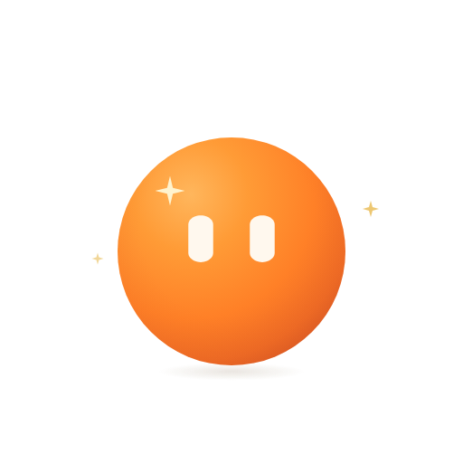

Q✦
今日星题 · 待作答
为什么相同成分的材料，性能仍会不同？从组织结构与加工过程出发，试着解释它们之间的联系。
按自己的节奏作答，进入深度跃迁
我的航程 · 材料科学基础 / 第三章
星橙Q正在观察伙伴们
按自己的节奏，每天点亮一点。
读题、作答、回看，让每一点收获都有去处。

正在准备今日星题、轨迹和航程…
从组织结构与加工过程出发，写下你的理解。
伙伴们在首页等你，回来后继续刚才的生活。
最多展示5只，基础Q常驻。每种形状使用自己保存的配色。
手机框内直接操作、滚动。演示数据 · 独立样张。